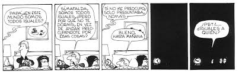
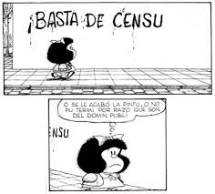
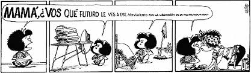

Panel que tuvo lugar durante la Feria Internacional del Libro en Camagüey, abril de 2016
Llevo 53 años trabajando en la Biblioteca Nacional. La UMAP, el parametrismo, los ochenta, el período especial, todo yo lo he pasado en la Biblioteca Nacional y la gente me ha dicho, pero qué aguante tú has tenido. Aguante no, yo tengo fe en el ser humano y cada día uno tiene que luchar para ser un ser humano con una mentalidad superior y esa es la divisa principal para poder luchar. Ustedes se pueden imaginar con mis 75 años los problemas que he tenido y tendré porque considero que la primera divisa de un revolucionario es ser honesto. Les pongo un ejemplo, el jefe de la cofradía de la negritud quería denunciar que había sido víctima de una actitud discriminatoria racial. No sabía dónde ir y se dirigió a un bufete, donde los abogados le dijeron: “Esto no es aquí, usted tiene que ir a la policía”. Fue a la policía y al hablar con el jefe de la estación su reacción fue: “¡Qué usted dice!; fulano, ven acá”. Bueno, para no hacer muy larga la historia, todo quedó en letra muerta, porque eso no era usual, que no procedía, que por aquí que por allá…

Mi intervención quizás sea un poco discordante, pero es honesta, es honesta porque yo lo he sufrido en carne propia como muchas otras personas. ¿Cuál es mi derecho como ciudadano?, ¿cómo hacerlo valer? La respuesta es buscar una fórmula, una estrategia para que los que tienen que aplicar y reconocer esos derechos se sensibilicen, y cuando una persona venga con una demanda lo oigan. Eso es muy importante y el derecho de ciudadanía cubana está, como decía ayer la compañera Cento, en las leyes complementarias, yo pienso que son muy importantes las leyes complementarias. Aquí hubo un momento en que se llamó a la conciencia y a la educación para enfrentarse a la discriminación racial. Compañeros, desde el siglo XIX la educación y la conciencia eran la bandera de todos los grandes pensadores cubanos, de Juan Gualberto Gómez, de Martí, de todos. Nunca se hizo un programa para que los antiguos esclavos tuvieran acceso a los derechos ciudadanos que la república les había otorgado y la constitución decía que todos los ciudadanos eran iguales ante la ley y a pesar de ese pensamiento martiano tan hermoso que se hizo en un contexto histórico, político concreto de que cubano es “más que negro, más que mulato, más que blanco”, el racismo se trasladó a la república y cuando tú lo denunciabas te ponían el pensamiento martiano como un valladar. Entonces para mí la reflexión que debemos hacer y que debemos intentar, independientemente de todos los ejemplos magníficos que el compañero René nos ha dado, apunta más a lo concreto, a lo que nos toca, a lo que como ciudadanos de a pie vemos y sentimos en la calle; tenemos que buscar esa cultura, ese conocimiento de los derechos y obligaciones que como ciudadanos tenemos, necesitamos interiorizarlo en cada uno. Sin embargo, ¿cómo vamos a lograrlo si eso no se enseña en la escuela desde la primaria?
Cómo podemos pasar por alto que todo esto que estamos haciendo es consecuencia de la educación eurocéntrica que nos inculcaron desde el periodo esclavista, nosotros respondemos a los cánones, a los códigos de la cultura eurocéntrica. Cuando hablamos de la estética… ¿cuando un negro o una negra es bello? En la medida que se parece al blanco, porque eso fue lo que nos enseñaron. Todas las religiones de origen africano eran cultos satánicos, este pensamiento también aparece en los derechos ciudadanos porque en la colonia el esclavo no era discriminado, había un prejuicio, el negro era el esclavo, pero eso era en Cuba, en la época de Roma hasta los blancos eran esclavos, pero en Cuba el negro era el esclavo, esos mitos de la Esclava Isaura o de Sofía, el personaje de la novela de igual nombre de Morúa Delgado, eran cosas novelísticas. ¿Cuándo vino la discriminación? Cuando el negro se superó, cuando el negro pudo empezar a competir con el blanco en los espacios laborales. Y eso no se enseña. El asunto no debe verse como un problema de prejuicio y discriminación, sino como un derecho ciudadano, pues el negro forma parte de la nacionalidad cubana.
No olvidemos que los grandes pensadores, los ideólogos del sistema esclavista (que yo pondero porque formaron parte de la construcción de nuestra nacionalidad y no los podemos ignorar ni dejar de lado), los derechos ciudadanos que estaban buscando eran para los blancos, no para los negros. ¿Qué ocurre cuando llega la independencia y se adquieren los derechos para todo el mundo? Pues que ese acuerdo de “cubano es más que negro, más que mulato, más que blanco” en la práctica nunca fue así.
Voy a terminar porque siento que es importante que se produzca un debate, no quiero irme de aquí sin que eso pase. Ustedes saben que por lo menos en la Habana habían personas que iban recorriendo las calles con un vaso de agua adivinando y a mi abuela la consultaron y mi abuela les dijo: “A ver, díganme algo de mi nieto”, y le dijeron: “Bueno, su nieto va a tener algo que ver con los papeles”. En aquella época cuando se decía que tenía algo que ver con los papeles significaba que podía estar implicado en alguna estafa, es decir, no había el pensamiento de que podía ser un escritor. A mi abuela le dijeron también que yo iba a tener suerte en la lotería y que iba a estar implicado en una cámara de representantes o del senado, eso fue mucho antes del triunfo de la revolución, cuando llegó la revolución, desapareció la lotería, primera frustración, ya no hubo cámara de representantes ni senado, segunda frustración, quedaron los papeles y bueno como trabajo en la Biblioteca Nacional puedo decir que allí más o menos acertaron.
Pero la realidad dura es que tenemos que luchar, tenemos que expandir el conocimiento. Lo que más me interesó de este panel es el título. Cómo hacer que los ciudadanos cubanos interioricen la cultura de la ciudadanía de la misma manera que les toca interiorizar otras muchas cosas, porque no nos vayamos por la tangente, también tenemos que luchar contra la homofobia, contra el machismo, contra la marginación de la mujer, porque a pesar de todo lo que la Federación de Mujeres Cubanas ha hecho, la mujer sigue en un estado de discriminación. Yo he tenido la posibilidad de visitar otros países y puedo valorar lo que significa Cuba para muchos ciudadanos de otros países y a veces los cubanos que se van por equis razones idealizan la realidad cubana, y justamente la admiración que levanta Cuba en el mundo entero es por esas cosas importantes que Cuba ha hecho. En mi último libro, acabado de publicar, señalo en el prólogo que mi lucha, mi quimera —a la que ahora voy a incorporar el problema de la cultura ciudadana porque me parece importantísimo—, es que en el plano de la lucha racial y contra todas las discriminaciones, Cuba alcance el mismo nivel que ahora disfruta en el plano de la educación, de la salud pública y del deporte. Esa ha sido mi lucha desde que estoy en estos debates públicos o académicos, y yo a veces me siento un poco defraudado por la academia, porque la academia habla mucho y se dirige a los académicos y nosotros tenemos que dirigirnos a ustedes, al pueblo, a la gente que vive en las periferias, en los solares, para que adquieran conocimientos y así puedan exigir y demandar. Esa es la única forma que tenemos de mejorar nuestra sociedad que está necesitada de mejorías en muchos aspectos; muchas gracias y disculpen estas palabras que son casi una catarsis, pero yo soy catártico y moriré siendo catártico.

María Antonia Borroto:
Ambas intervenciones están muy conectadas con el primero de nuestros paneles en esta Feria del Libro: el dedicado a la educación. No puedo dejar de pensar que Martí, en ese proyecto humanista esencial que es La Edad de Oro. Ese proyecto identitario —preocupado precisamente de la formación del ser humano que correspondería a naciones nuevas que estaban surgiendo a la modernidad—, pone mucho énfasis en el decoro y en esa idea esencial del cultivo celoso de la dignidad plena del hombre. Yo llevaría las cosas incluso más lejos: no se trata solamente de divulgar cuál es la constitución y cuáles nuestros derechos ciudadanos, pues me pregunto si las prácticas escolares contribuyen o no a la formación de ciudadanos. ¿Están nuestros maestros preparados para una tarea como esa? ¿Hasta qué punto las estrategias pedagógicas que se implementan en las escuelas cubanas no son resultado de esos problemas a los que René Fidel se refería?
Tomas Fernández Robaina:
Ustedes tienen aquí un escritor desconocido que es Juan René Betancourt, es un negro camagüeyano que escribió un libro en el año 1955 que se llama Doctrina negra donde incluye toda una metodología para luchar contra el racismo, posteriormente él publicó El negro: ciudadano del futuro, donde reproduce parte de Doctrina negra y artículos aparecidos en la revista Bohemia. Al triunfo de la revolución él fue el primero que envió una carta al poder evolucionario demandando que la revolución hiciera explícita su política desde el punto de vista racial. Lamentablemente se fue de Cuba y fue una persona muy anticomunista. A mí me han criticado mucho por estudiar a un anticomunista y siempre digo que no estoy alabando su anticomunismo, estoy dando a conocer lo que él escribió que para nosotros, en nuestra lucha, es positivo, porque hay que tomar de Juan René Betancourt todo lo que puede servirnos para nuestro mejoramiento, igual que de otra figura muy importante: Gustavo Urrutia, el creador de Los ideales de una raza, porque también ahondó extraordinariamente en todos estos derechos ciudadanos. Tenemos que armarnos y este conocimiento trasmitirlo, darlo a conocer, mi petición es esa. Me gustó mucho lo que usted dijo sobre el problema educacional, yo vengo luchando desde 1996 por algo que ya se había dicho en el 59 —porque yo no tengo ideas originales, yo soy un trasmisor de lo que otros dijeron antes, reactualizándolo con los contextos contemporáneos—, ya en el 59 con el famoso llamado de Fidel para escribir contra la discriminación racial se habló de la necesidad de cambiar los planes educacionales, eso no se ha hecho y yo pienso que la verdadera lucha, el verdadero camino para el cambio no se hará hasta que los planes educacionales no se cambien y además también, como se señalaba, se preparen a los profesores, porque los profesores no están preparados.
María Antonia Borroto:
Otro punto que tiene que ver con esa preparación atañe a los medios de difusión masiva. En estos momentos es casi un secreto a voces que se está discutiendo una nueva ley de comunicación en el país, pero es un tema del que no se habla, no se discute. Una ley de comunicación y el propio debate que ello generaría puede ayudar a regular muchas de las políticas de comunicación. Mi pregunta es si realmente ese sería el objetivo o si solo va a regularse el funcionamiento de la prensa, la relación con las fuentes. Aun así comprendería un universo interesantísimo que tiene que ver con la dinámica misma de las publicaciones, su labor desde el entramado cultural; permitiría debatir hasta qué punto los medios son reproductores, únicamente reproductores de ideología, o pueden propiciar o abogar también por el necesario cambio del que la sociedad cubana está urgida, y hasta qué punto la inexistencia de un política coherente puede hacer que uno vea en los medios muchas veces al mal compañero del dominó, ese que constantemente te está matando la jugada.
Tomas Fernández Robaina:
Y hay otra cosa importante que quiero añadir, antes de darle a Cueto la palabra. Ayer nosotros tuvimos un pre panel sobre los derechos ciudadanos al lado de la piscina. Yo pienso que es sumamente importante que tengamos presente que todo esto hay que expandirlo, lo repito. No nos podemos quedar con este conocimiento solo de este lado, tenemos que ponerlo en función de la educación y reproducirlo, siempre teniendo en cuenta que si uno no tiene el apoyo oficial las cosas se dificultan mucho, por lo tanto lo que siento es que tenemos que seguir aunando fuerzas, criterios y siempre con un sentido constructivo, nada de lo que vayamos a hacer tiene que ser con un sentido de sembrar discordia, hay que hablar con un lenguaje de amor, de comprensión, de entendimiento porque lo contrario sería totalmente funesto y esta es una de las divisas que yo siempre tengo, no podemos olvidar la historia, eso es algo muy importante, lo sé concretamente porque yo soy un amante de la historia, pero sí tenemos que darle un nuevo enfoque y no cargar con el resentimiento y con los odios que por equis situaciones han sido provocados en nosotros.
María Antonia Borroto:
Otra cuestión a la que me gustaría referirme tiene que ver con la idea misma de la cultura, por eso el panel se llama así. Yo agradecí muchísimo la reflexión que hizo René Fidel de la cultura holística porque solemos desconocerla. Vivimos muchas veces repitiendo que cultura es mucho más que arte y literatura, pero en nuestras prácticas cotidianas vivimos también traicionando y reduciendo constantemente el asunto. Porque a fin de cuentas de lo que se trata es de formar ciudadanos autónomos, plenos y que afiliados a un determinado proyecto de vida puedan llevarlo adelante en un entorno social determinado.
Emilio Cueto:
Yo creo que este tema es tan, pero tan importante y me alegro muchísimo que me hayan invitado. El ciudadano siempre es uno, es como un átomo individual y algo pasó en la revolución, sobre todo a partir del 61 donde todo lo que fuera individual, se contraponía a la idea de sociedad, entonces nos encontramos con una tensión entre el individuo y la sociedad y el ciudadano era un problema. Fíjense que el nombre de una de las instituciones más importantes del país se llama Organizaciones de Masas, y no de ciudadanos. No son organizaciones de ciudadanos que es lo que uno pensaría, son de masas. Hubo un privilegiar la colectividad por encima del individuo y en ese entramado filosófico que obviamente llegó a ser parte de nuestra vida cotidiana, todo lo que fuera individual y ciudadano como que fue echado aparte porque impedía la labor de la revolución de llegar a todo el mundo, el ciudadano se ve como algo egoísta, como algo que mira solo sus derechos. Entonces yo creo que en el fondo de este problema está la razón por la cual la cultura ciudadana no se ha desarrollado.
Quiero terminar haciendo referencia a mi caso personal. Yo tengo ciudadanía cubana y soy un ciudadano de segunda categoría, por la sencilla razón de que no vivo aquí y a pesar de que la constitución en el artículo 41 dice que tengo los mismos derechos de todo el mundo, en realidad no los tengo, yo no puedo coger un ómnibus de Astro para ir a Candelaria, nada más puedo reservar en Víazul, pero como Víazul no planifica viajes a Candelaria yo no puedo viajar. Se lo he dicho a todo el mundo, usted cree que alguien me ha dicho, ven vamos a conversar esto, es que no sabría ni adónde ir. Llego al museo y me quieren cobrar en CUC, “pero es que es turista”, me dicen, y yo respondo: “yo no soy turista”, “pero usted vive fuera” y yo riposto: “pero, ¿dónde usted cree que vive el embajador de Cuba en los Estados Unidos?, a diez cuadras de mi casa. Y usted, ¿en qué le cobra?”. Entonces yo soy un ciudadano y muchos de mis derechos han sido burlados y en primer lugar nadie lo entiende, nadie está dispuesto a llevarme ante un abogado, ningún abogado está dispuesto a llevarme ante un tribunal, digo todo esto porque es una cosa que a mí me lacera profundamente y no lo digo por mí porque yo en realidad he logrado llegar a muchos sitios donde otros que se encuentran en la misma situación que yo no lo han hecho.
No es una queja personal, yo simplemente soy en portavoz de mucha gente que ni siquiera está dispuesta a discutir este tema, pero creo que hay que tomar esto muy en serio, primero hay que quitarle el miedo al gobierno de que ser ciudadano es un peligro, todo lo contrario, mientras más libre y más fuerte me sienta yo, más fuerte es la nación. Eso es muy importante y el hecho de haber empleado el nombre de Organizaciones de Masas creo que mandó un mensaje equivocado de que si yo tengo un derecho personal me lo tengo que callar porque demandar a la sociedad generaría caos y es todo lo contrario. Hay que acabar, y esta es la raíz del problema de la ciudadanía, con la idea de que el ciudadano es un enemigo opuesto al todo: es parte del todo, pero es parte individual de ese todo, es un problema filosófico muy profundo y hay que restaurar en la nación la idea del ciudadano. Así como la familia es la base de la sociedad, el ciudadano es la base de la vida política de un país. Quería mencionarlo porque es algo sobre lo cual yo he reflexionado mucho y mi propia ciudadanía se ha visto cuestionada por el simple hecho de montarme en una guagua o asistir a un museo, lo cual ya es el colmo.

María Antonia Borroto:
Muchas gracias, ¿algún comentario del público?
Lorenzo Lunar:
Bueno sí, mire, rapidito, nosotros somos el compañero Lorenzo Lunar y yo creo que estos son espacios que son muy útiles para nosotros porque de verdad nos permite o sea yo, nosotros…Nosotros creemos que hay algo muy importante que es el verdadero sustento de la nación y entonces lo que nos pasa a nosotros es que algún momento parece que hemos sustituido la política como sustento de la nación y no la cultura como sustento de la nación, sin embargo esto también cuando Tomasito hablaba de esta dicotomía entre el concepto de compañero y ciudadano nosotros nos acordábamos que esa pelea entre esos dos conceptos no viene de un discurso político, viene de un discurso cultural, nosotros nos acordamos que eso sale precisamente de una obra de arte cubana, sale de una película que nosotros vimos cuando éramos jóvenes, que es “El hombre de Maisinicú”, quizás ninguno aquí nos podamos levantar y decir nosotros nos acordamos de tal frase del discurso de Fidel tal a lo mejor no nos acordamos de cuando Fidel dijo “cuando un pueblo enérgico y viril llora la injusticia tiembla”, pero todos nosotros, incluso nosotros, nos acordamos cuando en “El hombre de Maisinicú” dicen “Alberto Delgado y Delgado, cará, tú eres del G2 o trabajas pa’l G2” y vemos a Reynaldo Miravalles y nos acordamos de Reynaldo Miravalles y nos acordamos cuando Alberto Delgado iba manejando y el policía lo para y le dice ciudadano, sin ningún tipo de ofensa porque además se le dijo sin un tono ofensivo y él, el compañero Alberto Delgado, es el que se toma a mal el concepto de ciudadano y le dice, “compañero, igual compañero que usted”. Ahí, desde un discurso cultural, tumbamos el concepto de ciudadano y lo sustituimos por el concepto de compañero y ya, decir ciudadano es una ofensa para nosotros. La cosa esta por allí y si queremos reconstruir ciertas cuestiones incluso ideológicas y políticas en nuestra identidad, tenemos que partir entonces de salvaguardar un discurso cultural coherente. Yo veo que de pronto la han cogido con que si el discurso de Obama en el Gran Teatro de La Habana… Señores, y Baby Lores nos está pasando por aquí y Osmani Garcia nos está pasando por acá, y Yeiko Forever esto, y lo otro, y entonces nos estamos olvidando de ese discurso cultural. Señores, somos nosotros los que tenemos que decir: nosotros tenemos que preocuparnos porque nosotros seamos nosotros de verdad y defender la nación y la cultura porque nosotros, que nos queremos tanto, no podemos separarnos.